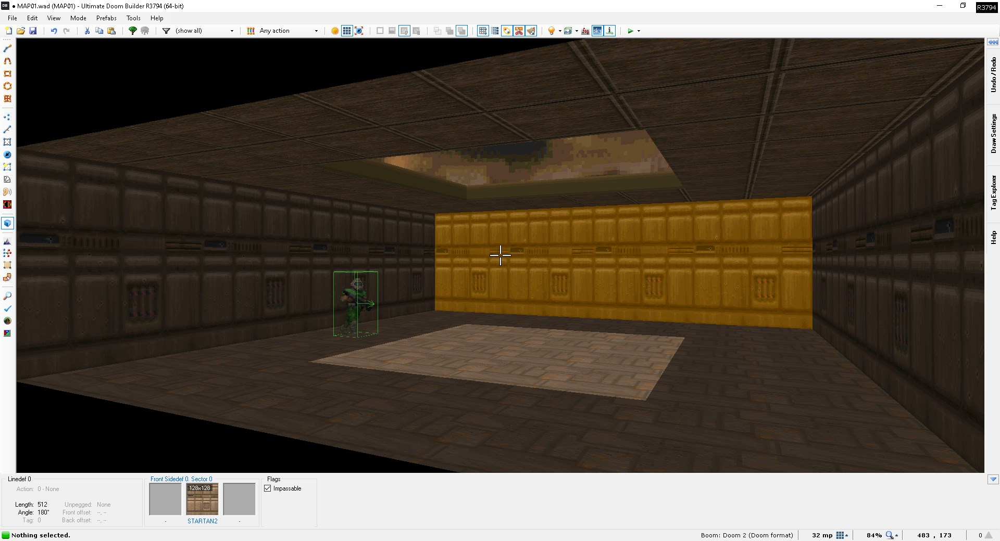
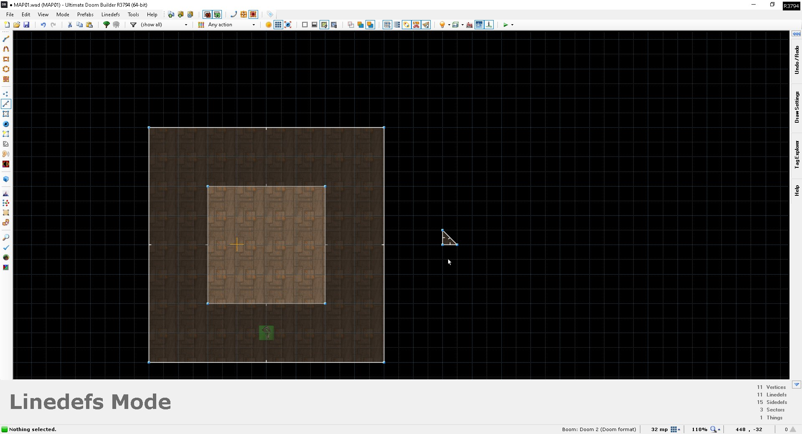
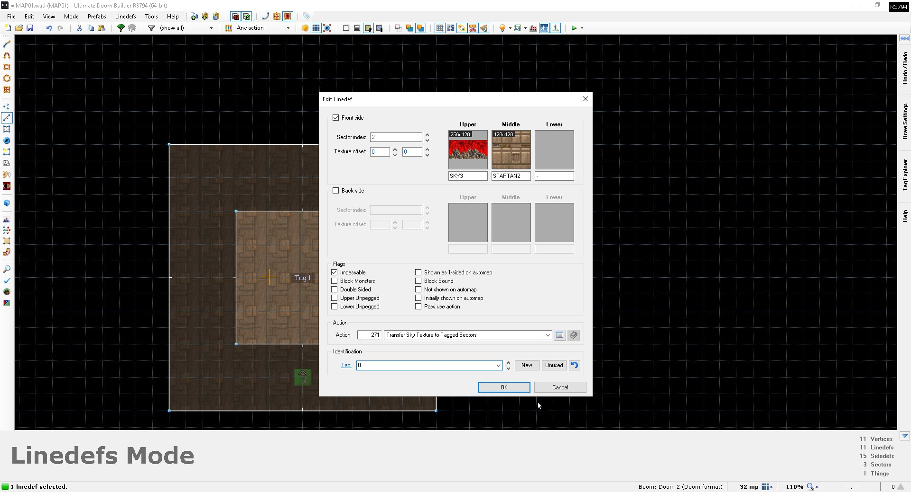
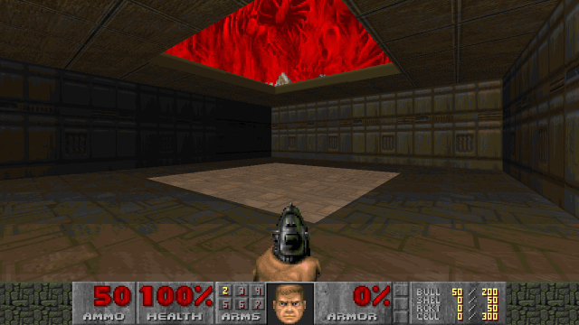
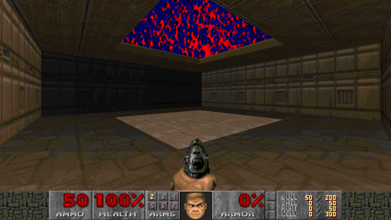
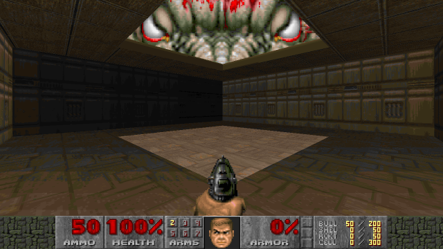
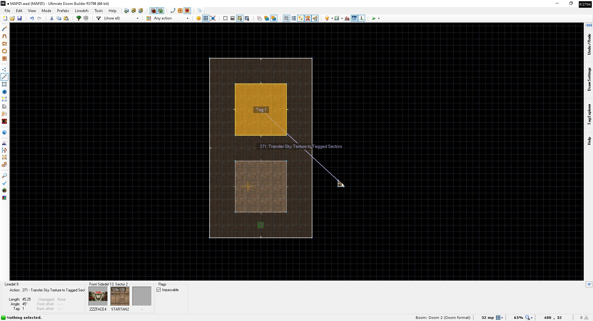
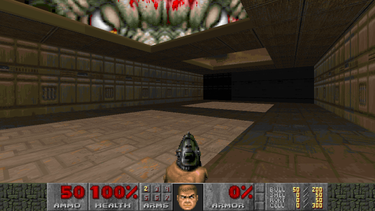

This tutorial is dedicated to telling you all about the MBF sky transfer. The MBF sky transfer is a feature introduced in the source port MBF - hence its name -
that lets you define a custom sky for a specific sector(s). The feature is primarily available in Boom-format maps but has been adapted in different forms by other source ports.
You can even use it in limit-removing maps now, thanks to Crispy Doom having implemented support for MBF sky transfers!
So how do you go about setting up an MBF sky transfer? To demonstrate the feature, I quickly created this somewhat basic and ugly room in UDB. Notice that it has a square in the
middle with the F_SKY1 flat in the ceiling:

How the MBF sky transfer works in its essence is that it transfers the upper texture of a line with line action 271 on it to all sectors with the
F_SKY1 flat and the target sector tag. A target tag of 0 will transfer the texture to all untagged sectors with the F_SKY1 flat. While you could technically use any line in your
map to act as the "acting" line for the effect, best mapping practices dictate that you draw a dummy sector outside the main map for setting it up. In my example, the small triangle
to the right of the square room will act as said dummy sector:

Then, on any line in your dummy sector, change its upper texture to the texture you wish to use as the sky, give it the line action 271 and set the
target tag to the tag of the sector where you want the sky transfer to occur. Once again, a target tag of 0 can be used to transfer the sky to all untagged sectors with the F_SKY1
flat in the map. Note that you'll have to repeat this approach for every unique sector tag you want to have the new sky; a target tag of 0 will transfer the sky to untagged sectors
ONLY.

And, if you did everything correctly, upon launcing your map, your new sky will show up in-game!

Now you don't have to strictly use a sky texture with the MBF sky transfer - any texture of your choice will do. If you wanted to, you could give your map a FIREBLU sky, as shown
below.

Or you could have the Icon of Sin stare down at you ominously by giving the acting line the ZZZFACE4 upper texture.

You can also use the MBF sky transfer to give your map multiple different skies. The approach is the exact same - you just change the upper texture of the acting line for each unique
sky in the map. Obviously, the target tag for each unique sky also needs to be different, as does the tag of each affected sector you want to have a unique sky in. Here, I simply
expanded the room slightly, gave it another sky sector with a tag of 1 and changed the target tag of the acting line to 1. In-game, the map then shows the default sky in the untagged
sector and the ZZZFACE4 sky in the sector with tag 1:


That concludes this tutorial on the MBF sky transfer.